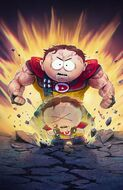

Selecione um personagem
- 
Ferramenta
Ferramenta é conhecido por sua inteligência e habilidades técnicas. Ele é um especialista em tecnologia e usa suas habilidades para criar dispositivos e armas que auxiliam o grupo dos Amigos da Liberdade em suas missões.